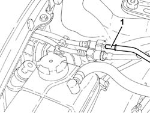
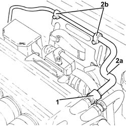

1080E66 AIR INTAKE CHAMBER fuel vapour intake PIPE - R.R.
- Path
- Procedures > 10 ENGINE > 1080 EXHAUST EMISSION CONTROL SYSTEM > 1080E evaporation control system > 1080E66 AIR INTAKE CHAMBER fuel vapour intake PIPE - R.R.
- Kind
- repair procedure (removal / refitting; the operation number is the code)
- Applies to
- engines: 3.2 V6; all production periods
- Interactive page
- https://sloeber94.github.io/elrnDB-a147/en/#/3024990
Applies to: engines: 3.2 V6; all production periods
 Removing
Removing
 Refitting
Refitting1. Disconnect the rapid connector for the fuel vapour pipe leading to the air chamber, active charcoal filter side.

Applies to: engines: 3.2 V6; all production periods
1. Disconnect the rapid connector for the fuel vapour pipe leading to the air chamber, chamber side.
2. Remove the air intake chamber fuel vapour inlet pipe (2a) after having released it from the fastenings (2b).

Applies to: engines: 3.2 V6; all production periods
Refitting
RemovingPlace the air intake chamber fuel vaopur inlet pipe back in its housing and secure it.
Connect the rapid connectors for the air intake chamber fuel vapour inlet pipe.